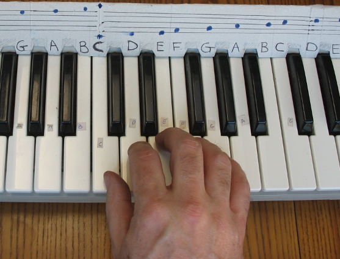

Piano Booster now comes with it’s own MIDI music course called Booster Music. The first time you run Piano Booster a music folder called BoosterMusicBooks is created in your Music folder on your PC. The Booster Music course with the MIDI files and sheet music can also be downloaded here BoosterMusicBooks.zip
The sheet music for these two course can be viewed on these pages:
Also many other MIDI files that work with Piano Booster can be found by searching the web.
If you are new to the piano then labelling the piano keyboard will greatly help. Print out the note name cut out pdf:
If you have never played before then a lot of people recommend that beginners start by placing the right hand thumb on middle C the index finger on D up to the little finger on G with one finger on each note as shown in the photograph below.

Another mistake beginners sometimes make is just to use a single finger to play all the different notes on the piano. Try to use all your fingers and keep moving your hand position to what ever feels most comfortable for you. Hopefully you will find that the fingering will come naturally without having to thinking about it.
If there is a piece in a difficult key signature then you can always use Piano Booster to transpose the piece of music into an easier key such as the key of C which has no accidentals or to G or F which only have a single accidental.
Conversely if you find a piece of music too easy then you can always transpose into a different key with more sharps or flats it is always good practice to transpose a familiar piece of music into a different key.
If you want Piano Booster to always display the sharps and flats then change the key signature to C and then Piano Booster will display all the sharps and flats. So for example if you are playing a piece of music in the key of D major t hen Piano Booster will not display the sharp symbol before the C and F notes because they are notes that are in the part of the D scale. Changing the key signature to C Major will cause Piano Booster to always display the sharp symbol whenever C# or F# are shown…